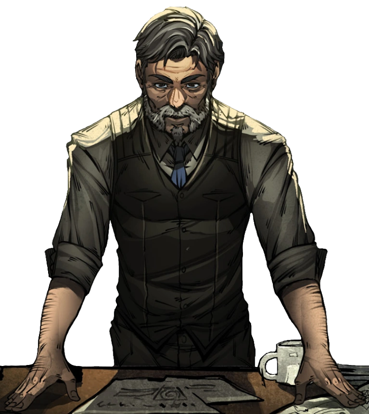

A Ordo Realitas, Ordem da Realidade ou apenas Ordem, é a principal organização responsável por manter o bem estar da Membrana e a proteger de Rituais Ocultistas que buscam enfraquecê-la em busca de poder e ambição própria. A Ordo Realitas já foi uma organização secreta com objetivo de combater a influência paranormal e esconder a existência de entidades paranormais do mundo comum, mas, por conta do avanço do conhecimento oculto, isso teve de mudar. Ordo Realitas tem como objetivo impedir que esse caos transborde no nosso mundo o destruindo.
Conheça a Membrana
É uma realidade alternativa habitada por entidades desconhecidas e poderosas. O nosso mundo e o Outro Lado são separados por uma barreira hipotética chamada Membrana. As duas realidades estão conectadas naturalmente, com uma fazendo contato com a outra constantemente, mas, devido a eventos que deixam a Membrana mais fraca, criaturas mais poderosas conseguem invadir nossa realidade e gerar caos e destruição.
A membrana que basicamente é o que separa o nosso mundo do “outro lado”, um lugar onde todo o tipo de criatura e coisas sobrenaturais coexistem num puro harmonioso caos.
Mesmo sendo eficiente, a Membrana não é indestrutível. Quando a população de uma determinada região tem sua sanidade abalada, seja através do medo gerado por uma história inventada, múltiplas mortes e tragédias, boatos de um monstro atacando naquela região ou a presença de alguns símbolos misteriosos, a Membrana fica danificada naquele local, facilitando a travessia das entidades do Outro Lado para a realidade comum, que se manifestam na forma de monstros fortíssimos.
Como você foi recrutado?
Atualmente, a Ordo Realitas detém sua principal base de operações situada na cidade de São Paulo.
Os agentes que atuam para a organização normalmente são recrutados de maneira discreta e são treinados por membros veteranos antes de seu primeiro contato direto com a organização. Normalmente essas pessoas são cidadãos comuns que já experienciaram algum tipo de contato com o sobrenatural, e, seja por possuir curiosidade, motivações pessoais ou determinação em lutar contra o paranormal, elas se tornam potenciais recrutas de interesse da Ordem. Entre as funções dos agentes da Ordem estão:
- Exterminar todas as criaturas sobrenaturais com que têm contato
- Assistir suas equipes móveis com informações e combates em campo
- Catalogar e relatar os casos e investigações que enfrentam
- Evitar ao máximo a exposição de civis ao paranormal desnecessariamente
Quem é o atual dono da Ordo?
Ao longo da história da Ordo Realitas, inúmeros agentes foram considerados "Senhores Veríssimo". No passado, fosse por segurança ou simplesmente por autopreservação, suas identidades eram mantidas em segredo uns dos outros. Máscaras eram vestidas e esse nome falso universal era usado, fazendo com que todos fossem aparentemente iguais, a não ser por uma exceção em específico: o líder, o "verdadeiro" Senhor Veríssimo.
O atual líder da Ordo Realitas. Senhor Veríssimo ingressou na organização por volta de 1985, quando tinha apenas 25 anos. Tendo estado na Ordem por quase quarenta anos, Veríssimo já participou de várias missões, eliminou inúmeras criaturas e ocultistas e treinou múltiplos agentes.

Descubra as lendas...
Veja só, alguem gostaria de descobrir quem foram as lendas que já passaram por aqui?